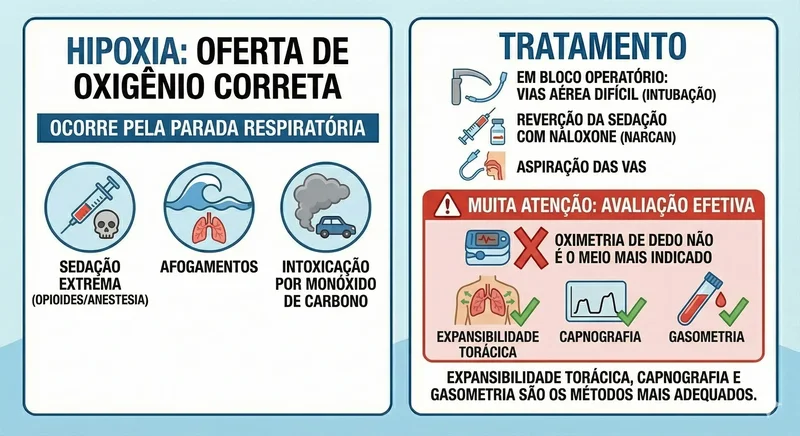
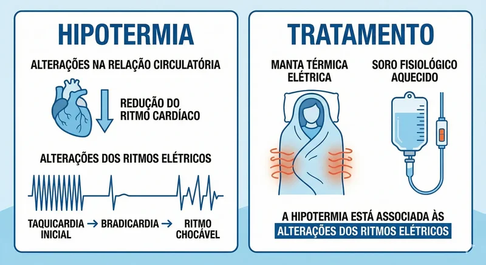
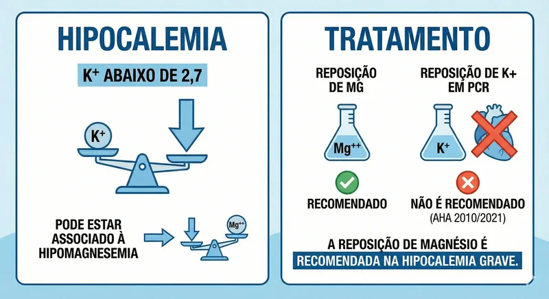
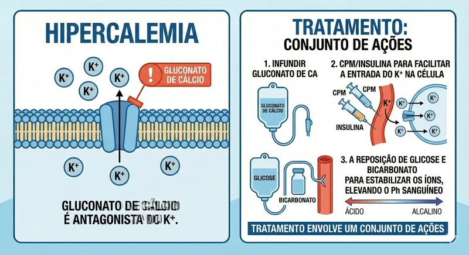
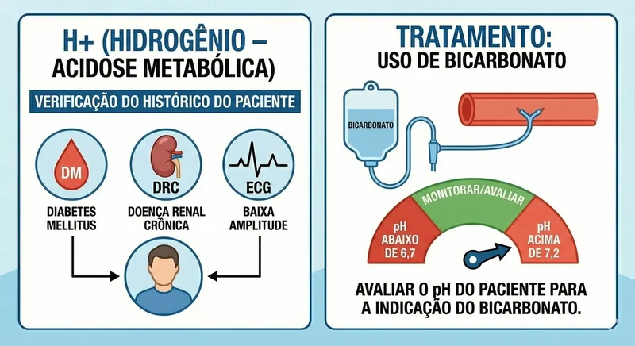

Jij5 uur in reanimatieSamen met de 5 T's van reanimatievertegenwoordigers zijn deze de belangrijkste omkeerbare oorzaken van een hartstilstand die snel beschermd en ondersteund moeten worden tijdens noodhulp. Dit concept is fundamenteel gebaseerd op het ACLS-protocol (Advanced Cardiac Life Support) dat betrekking heeft op de bereidheid tot systematische aanpak tijdens reanimatie. Elke "H" staat voor een specifieke aandoening die, indien beschadigd, kan leiden tot het opheffen van de hartstilstand en het herstel van de spontane bloedsomloop. In dit artikel bespreken we de 5 H's.
Van de busreanimatie van 5 H's
Wat zijn de 5 H's?
De 5 H's zijn metabole en fysiologische aandoeningen die een hart- en ademstilstand kunnen veroorzaken of kunnen bijdragen. Ze worden in het Engels afgekort als "H's":Onderkoeling, hypokaliëmie/hyperkaliëmie, waterstofionen (acidose), hypoxie, hypovolemieHet snel significante en gecorrigeerde van deze factoren is essentieel om de overlevingskansen te vergroten en neurologische gevolgen te verminderen.
1e H - Hypoxie (zuurstofgebrek)
A hypoxieZuurstofgebrek (hypoxie) is de voornaamste oorzaak die onderzocht moet worden bij een hartstilstand. De hersenen zijn extreem geïnfecteerd voor zuurstofgebrek en kunnen binnen 4-6 minuten onherstelbare schade oplopen. Hypoxie kan het gevolg zijn van:
- Obstakel midden op de weg
- Ademhalingsdepressie als gevolg van medicijnen (opioïden, kalmeringsmiddelen)
- Longoedeem van pneumothorax
- Koolmonoxide vergiftiging
- Verdrinken of bijna-verdrinken

Behandeling van hypoxie:
- Zorg voor een vrije luchtweg:Juiste houding (hoofd kantelen, kin omhoog)
- Voldoende ventilatie:10-12 ademhalingen per minuut
- Zuurstoftherapie:100% zuurstof indien beschikbaar
- In de operatiekamer:Endotracheale intubatie indien nodig.
- Het opheffen van de sedatie:Naloxon (Narcan) kan worden gebruikt bij een overdosis opioïden.
- Aza:Het afvoeren van afscheidingen en braaksel.
⚠️ Belangrijke mededeling:
Vingerpulsoximetrie kan metingen geven bij hypoperfusie. Geschiktere methoden zijn onder andere: beoordeling van de borstexpansie, capnografie en arteriële bloedgasanalyse om de effectieve zuurstofvoorziening te expliciet.
2e H - Hypovolemie (laag bloedvolume)

A hypovolemieDit is de tweede oorzaak die onderzocht moet worden. Het kan worden veroorzaakt door uitwendige bloedingen, chemische uitdroging of uitgebreide brandwonden. Een onvoldoende bloedvolume brengt de doorbloeding van weefsels en de zuurstofvoorziening van vitale organen in gevaar.
Veelvoorkomende:
- Traumatische bloedingen
- Scheuring van aneurysma's
- Maag-darmbloedingen
- Extreem drugsgebruik
- Ernstige merkwonder
Behandeling van hypovolemie:
- Bloedtransfusie met rode nabij:Geconcentreerde rode schijnen zijn de meest succesvolle optie.
- Kristalloiden:Lactaat-Ringeroplossing voor volumevervanging.
- Beheers de bloeding:Direct comprimeren, zo nodig een tourniquet.
- Volumelimiet:Totaal 2000 ml volgens AHA-richtlijnen.
- Toegestane hypotensie:Intensieve patent
- Blijf monitoren:Vitale, afvoer
3e H - Hypothermie (lage lichaamstemperatuur)
A hypothermieEen lichaamstemperatuur lager dan 35 °C veroorzaakt aanzienlijke veranderingen in het cardiovasculaire en neurologische systeem. Naast een lagere hartslag gaat dit gepaard met elektrische verstoringen die kunnen evolueren van een aanvankelijke tachycardie naar bradycardie en vervolgens naar een schokbaar ritme.
Gevolgen van onderkoeling:
- Verminderde hersenstofwisseling
- Veranderingen in de elektrische geleiding van het hart
- Vermindering van het zuurstofverbruik
- Stollingsstoornis
- Druk op de centrale regelaar

Behandeling van onderkoeling:
- Elektrische deken:Meest efficiënte verwarmingsmethode
- de zoutVloeistoffen verwarmd tot 40-42 °C
- Verwarming:Chemische dekens, terraverwarmers
- Hartbewaking:Ga door met ECG vanwege het risico op hartritmestoornissen.
- Geleidelijk opnieuw opwarmen:Zorg ervoor dat het product snel opnieuw wordt opgewarmd.
4e H - Kaliumstoornissen

JijkaliumstoornissenDeze factoren zijn cruciaal bij een hartstilstand. Zowel hypokaliëmie (< 2,7 mEq/L) als hyperkaliëmie (> 6,0 mEq/L) kunnen fatale hartritmestoornissen veroorzaken en de contractiliteit van het hart verminderen. Hypokaliëmie gaat vaak gepaard met hypomagnesiëmie.

4.1 Hypokaliëmie (< 2,7 mEq/l):
Gedrag:
- Magnesiumvervanging:Belangrijker dan de kaliumvoorziening
- Kaliumsupplement:Niet aanbevolen voor reanimatie volgens AHA 2010/2021.
- Monitoring:Ga door met ECG in dosingsreeks.
4.2 Hyperkaliëmie (> 6,0 mEq/L):
Calciumgluconaat is een kaliumantagonist en moet als eerste worden gekozen:
- Calciumgluconaat:10-20 ml intraveneus toedienen gedurende 2-5 minuten.
- Insuline + glucose:Het opnemen van de opname van K+ in cellen.
- Natriumcarbonaat:Het verhoogt de pH-waarde van het bloed en de opname van kalium (K+) en cellen.
- Diuretica van hars:Voor het verwijderen van K+ uit het lichaam.
- Dialyse:Bij indirecte en gelijktijdige gebeurtenissen
5e H - METABOLISCHE ACIDOSE (H+)
A metabole acidoseEen pH < 7.35 ontstaat door de hoop op zuren of het verlies van bicarbonaat. Het wordt vaak geassocieerd met gedecompenseerde diabetes mellitus en chronische nierziekte. Op het ECG kunnen golven met een lage amplitude te zien zijn.
Oorzaken bij metabole acidose:
- Diabetische ketoacidose
- Nierfalen
- Melkzuuracidose (weefselhypoxie)
- Naam van giftige stoffen (methanol, ethyleenglycol)
- Ernstige diarree

Behandeling van acidose:
- Natriumcarbonaat:Geschikt voor pH < 6,7 tot > 7,2
- Van Onderliggende Onderliggende oorzaak:Het aanpakken van de oorzaak van acidose.
- Voldoende ventilatie:Ademhalingen
- Monitoring:Seriële arteriële bloedgasanalyse
5 Hs-aanpakprotocol
Onderzoeks- en behandelingsopdracht:
Klinisch belang van de 5 H's
Het schijnbaar en systematisch toepassen van de 5 H's tijdens reanimatie is essentieel voor het verhogen van de overlevingskansen en het verminderen van neurologische gevolgen. Elke H vertegenwoordigt een omkeerbare factor die, indien snel herkend en gestimuleerd, kan leiden tot herstel van de spontane bloedsomloop. Een diepgaand begrip van tien concepten is essentieel voor alle zorgverleners die betrokken zijn bij spoedeisende hulp.
💡 Studietip:
Ezelsbruggetje in het Engels: "HipóHipóHinleidingHinleidingH"ipo" - dacht het als:HipóXia,HinleidingVolemie,HinleidingTHermia,HinleidingKalemie/hyperkaliëmie,H+ (Aacidose)